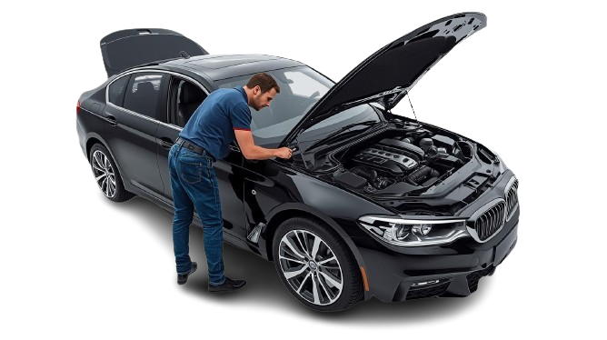

Dicas de Compra
5 Sinais de que o Carro que Você Quer Comprar foi Batido
Aprenda a identificar reparos estruturais e repinturas que podem esconder um passado problemático.
Evite prejuízos de milhares de reais com a inspeção pré-compra mais rigorosa.

Um laudo cautelar tradicional verifica apenas estrutura, procedência legal e histórico de sinistros. Isso é importante — mas está longe de mostrar a real condição de um carro.
Na nossa vistoria pré-compra, você recebe uma análise completa do veículo. Avaliamos não só a parte estrutural e documental, mas também mecânica, elétrica, lataria, rodas, freios, suspensão, conjunto óptico, interior do veículo e funcionamento dos equipamentos.
Além disso, realizamos um teste de rodagem e varredura eletrônica com scanner profissional, analisando os principais parâmetros do motor e dos sistemas eletrônicos.
No total, mais de 300 itens são verificados e testados.
O objetivo é simples: evitar surpresas caras depois da compra. Problemas ocultos — como junta de cabeçote comprometida, contaminação do sistema de arrefecimento ou falhas eletrônicas — podem facilmente gerar reparos acima de R$ 10.000.

Entenda por que a Carro Certo é a escolha definitiva para quem busca segurança real na compra de um seminovo.
| Item de Avaliação | Carro Certo | Vistoria Cautelar Tradicional | Comentários |
|---|---|---|---|
| Motor | Testamos compressão, cilindros, virabrequim e comando de válvulas. Identificamos vazamentos e problemas de admissão e escape antes que eles virem uma conta salgada na oficina. | ||
| Componentes Auxiliares do Motor | Correias, polias, bobinas, velas, retentor de volante, catalisador, sonda lambda, cânister, coxins e muito mais. Os componentes que sustentam o motor em funcionamento – todos inspecionados. | ||
| Transmissão | Trocas de marcha travando? Engasgando? Identificamos falhas na transmissão antes que elas te deixem na mão – ou no prejuízo. | ||
| Sistema de Arrefecimento | Radiador, eletroventilador, bomba d'água, válvula termostática e mangueiras: inspecionamos tudo e detectamos qualquer sinal de corrosão ou ebulição. Um motor superaquecido pode custar caro – e você não vai descobrir isso depois de assinar o contrato. | ||
| Elétrica | Bateria, alternador e chicote elétrico avaliados. Problemas elétricos são invisíveis a olho nu – e caros de resolver. Aqui, nada passa despercebido. | ||
| Ar Condicionado | Manutenção de ar condicionado pode pesar no bolso. Por isso medimos a temperatura mínima atingida e inspecionamos condensador, filtro secador, mangueiras e compressor. Você saberá exatamente o que está comprando. | ||
| Adulterações de Quilometragem | Cruzamos a quilometragem do odômetro com outros parâmetros reais de uso do carro. Adulteração de odômetro é mais comum do que parece – e aqui você não será enganado. | ||
| Rodas | Informamos a vida útil real dos pneus. Parece simples, mas pode representar uma troca imediata de R$ 1.000 ou mais logo após a compra. | ||
| Suspensão | Inspeção minuciosa em amortecedores, molas, barras axiais, terminais, bieletas e demais componentes. Suspensão comprometida afeta segurança e gera custos altos – identificamos tudo antes. | ||
| Freio | Pastilhas, discos, fluido, flexíveis, servo-freio e cilindro mestre: todos testados. Freio em dia não é opcional – é o que separa um carro seguro de um acidente. | ||
| Teste de Rodagem | Seguimos um roteiro técnico de condução para identificar ruídos, falhas de resposta, vibrações e qualquer comportamento fora do padrão. Nenhum problema escapa do test drive profissional. | ||
| Estofados | Identificamos sinais de enchente, rasgos, manchas e odores. O interior do carro conta a história real de como ele foi tratado – e nós sabemos ler essa história. | ||
| Scanner |
*
|
Scanner sem taxa extra – e sem enrolação. Não apenas lemos códigos de erro: analisamos os parâmetros que realmente revelam a saúde do motor (ECT, Fuel Trim, MAP, Avanço de Ignição, TPS, Sondas Lambda, Carga do Motor, Pressão da Bomba de Combustível e Tensão da Bateria). | |
| Teste Funcional |
|
Vai além do básico: testamos tomadas 12V e USB, maçanetas, temperatura do ar quente e frio, cintos de segurança, bancos, pedais e dezenas de outros itens que a vistoria tradicional simplesmente ignora. | |
| Avaliação da Pintura |
*
|
Mais de 100 pontos medidos com micrômetro. Identificamos qualquer repintura, massa ou serviço de lataria – por menor que seja. Você saberá exatamente o histórico da carroceria. E sem cobrar nada a mais por isso. | |
| Estrutura (colunas, torres de amortecedor, longarinas, caixas de ar, assoalhos) | A estrutura é o esqueleto do carro – e dano estrutural é o tipo de problema que não tem conserto barato. Inspecionamos cada ponto crítico para garantir que o veículo não passou por batidas graves que comprometam sua segurança. | ||
| Informações do Veículo, Chassi, Nº Motor, Nº Câmbio, etc. | Conferimos e cruzamos todos os números de identificação do veículo. É a base de qualquer vistoria séria – e a primeira coisa que fazemos antes de qualquer outra avaliação. | ||
| Débitos de IPVA, Licenciamento, Multas | Antes de fechar negócio, você precisa saber se o carro que está comprando vem com dívidas escondidas. Consultamos todos os débitos para que nenhuma surpresa chegue junto com o documento. | ||
| Histórico de Leilão, Furto, Sinistros e Restrições | Um carro com passado problemático pode parecer perfeito por fora. Investigamos o histórico completo do veículo para garantir que você não está comprando uma dor de cabeça disfarçada de oportunidade. |
Diferente dos concorrentes que fazem apenas uma 'olhadinha' rápida, nós entregamos um dossiê completo sobre o seu futuro investimento.
Você recebe um laudo completo com fotos, vídeos e descrições personalizadas de cada item. Nada de jargão de oficina. É como ter um mecânico de confiança do seu lado, explicando tudo, sem pressa.
Você não precisa entender de carro para entender o nosso laudo. Cada item é classificado em um sistema de semáforo: Verde significa que está tudo certo. Amarelo é um sinal de atenção — algo que pode precisar de reparo em breve. Vermelho é o que pode te salvar de uma roubada: risco iminente de quebra, problema de segurança ou um negócio que simplesmente não vale a pena fechar.
A maioria das vistorias lê o código de erro e anota "falha detectada". A nossa vai muito além. Analisamos as variáveis reais dos sistemas eletrônicos do veículo — Fuel Trim, Carga de Admissão, Lambda, Pressão da Bomba de Alta e muito mais — e traduzimos tudo isso em uma interpretação técnica que revela o estado real do motor, não apenas o que a luz no painel quer te mostrar.
Com equipamentos de medição profissional, verificamos o que está invisível a olho nu: a voltagem real da bateria (não só se o carro liga), a taxa de corrosão interna do sistema de arrefecimento, a espessura exata dos discos e pastilhas de freio, o desgaste real dos pneus milímetro a milímetro, a proporção correta de aditivo no líquido de arrefecimento e o nível de contaminação do fluido de freio — um dos itens mais ignorados e mais perigosos de um carro usado. Não trabalhamos com achismo. Trabalhamos com números! E são esses números que vão te dizer se o carro na sua frente vale o preço pedido
Exemplo de Inspeção Profissional
Com vazamento e sinal de desmontagem
Líquido de arrefecimento devidamente aditivado e no nível
Presença de massa e repintura na porta do motorista
Sem danos ou riscos
Sem presença de código de erros
Correção do tempo de injeção acima de 25%. Acima do limite de ±5%
32 fotos e 4 vídeos incluídos
Cada apontamento documentado para você entender antes de decidir
Não existe achismo no nosso processo. Cada ponto do veículo é analisado, descrito e documentado — para que, ao final, você tenha em mãos um relatório completo, que lhe garantirá confiança para negociar e comprar seu carro. Veja a seguir um pouco do que está incluído na nossa Vistoria Completa:
Verificamos registros nos vidros, numeração de chassi e motor, placa e etiquetas — para garantir que o carro é exatamente o que parece ser.
Usamos medidor de espessura para identificar repinturas, detectar amassados, trincas, diferenças de tom e indícios de acidentes escondidos.
Inspecionamos longarinas, colunas A, B e C, assoalho e cofre do motor para detectar batidas graves, soldas e reparos que afetam a segurança estrutural do veículo.
Avaliamos vazamentos, estado das juntas, turbina, correias, coxins, filtros e óleo — tanto visualmente quanto com o motor em funcionamento.
Avaliamos e medimos sensores, chicote elétrico, tensão da bateria em repouso, durante a partida e com o alternador em carga para mapear o real estado da elétrica do carro.
Inspecionamos discos, pastilhas, tambores, amortecedores, bandejas, buchas, bieletas e semi-eixos — os itens que mais afetam segurança e custo de manutenção.
Medimos a temperatura real do ar-condicionado e avaliamos compressor, condensador e evaporadora.
Checamos fluido, radiador, bomba d'água e verificamos risco de corrosão do sistema.
Leitura completa da central do motor, com identificação de códigos de erros, possíveis adulterações, correções de combustível e ignição, pressão no coletor de entrada, pressão de combustível, entre outros parâmetros.
Avaliamos partida, trocas de marcha, freios em alta velocidade, estabilidade em curvas, ruídos em piso irregular, comportamento do câmbio e motor em operação.
Verificamos bancos, carpete, forro do teto, cintos de segurança, painel, airbag e itens elétricos como vidros, retrovisores, multimídia, ar-quente e muitos outros.
A identificação de defeitos gera um poder de negociação enorme. Nossos clientes frequentemente conseguem descontos muito maiores que o valor da nossa vistoria, evitando problemas futuros e fortalecendo sua posição na compra.
Atendemos toda a região de metropolitana de São Paulo. Agende uma inspeção já!
(11) 94320-1828
@carrocerto.vistoria
Informação técnica e dicas práticas para você nunca mais errar na compra de um veículo usado.
Aprenda a identificar reparos estruturais e repinturas que podem esconder um passado problemático.

O hodômetro pode mentir, mas o desgaste de outros componentes conta a história real do veículo.

Problemas crônicos de motor e câmbio que só aparecem após alguns quilômetros de uso.

Entenda as diferenças entre leilão de financeira, seguradora e frota antes de fechar negócio.
Tire suas dúvidas sobre o nosso serviço de vistoria pré-compra.